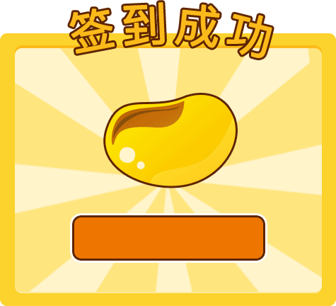

<div>
    <div class="swap1">
        <div class="header title1 btn-block text-center">
            <span ui-sref="home" ng-click="vm.closeApp()"  class="fa fa-angle-left pull-left">&nbsp;&nbsp;返回</span>
            <span>每日签到</span>
        </div>
        <!--<div class="swap">-->
            <!--<div class="header title2 text-center btn-block">-->
                <!--<span  class="fa fa-angle-left pull-left">&nbsp;&nbsp;返回</span>-->
                <!--<span>门卫处</span>-->
            <!--</div>-->
        <!--</div>-->
    </div>
    <div class="sign-wrap">
        <div class="qiandap-box">
            <div class="sign-con clear">
                <div class="sign-left">
                    <div ng-if="vm.handle===true" class="sign-left-top clear">
                        <div class="current-date"></div>
                        <div class="sign-right">
                            <div class="sign-top">
                                <div class="just-sign sign-sprits" ng-click="vm.signComplete()" id="js-just-sign">
                                    <span>签到</span>
                                </div>
                            </div>
                            <div class="ruleBox">
                                <div class="sign-layer-bg"></div>
                            </div>
                        </div>
                    </div>
                    <div ng-if="vm.handle===false" class="sign-left-top1 clear">
                        您已连续签到{{vm.currentLast}}天
                        <span class="pull-right">本月已累计签到{{vm.signArr.length}}天</span>
                    </div>
                    <div class="sign-main" id="js-sign-main">
                        <ul class="calendar-header sign-list">
                            <li>周一</li>
                            <li>周二</li>
                            <li>周三</li>
                            <li>周四</li>
                            <li>周五</li>
                            <li class="weekend">周六</li>
                            <li class="weekend">周日</li>
                        </ul>
                        <ul class="sign-list" id="js-sign-list"></ul>
                    </div>
                    <div class="sign-history sign-tran sign-radius" id="js-sign-history">签到规则</div>
                </div>
            </div>
        </div>
    </div>
    <!-- 签到规则 -->
    <div class="sign-bottom sign-layer signInRule" style="display: none">
        <div class="sign-layer-con1 sign-radius">
            
            <div class="sign-rule-list">
                <h4 style="color: #fcea6b;">签到规则</h4>
                <p>签到领取逆袭豆，通过消耗逆袭豆可观看付费视频。</p>
                <p>首日签到可领取1颗逆袭豆，连续签到每日递增1颗。连续签到5天后，逆袭豆每日可领取5颗。</p>
                <p>签到中断逆袭豆可要重新计算呦~</p>
            </div>
        </div>
        <div class="sign-layer-bg"></div>
    </div>
    <!-- 签到 layer start -->
    <div class="sign-layer sign-active">
        <div class="sign-layer-con sign-radius">
            
            <div class="mainImg clear">
                
            </div>
            <div class="addBean">
                <span>逆袭豆：+</span>
                <span class="beanColor">{{vm.beanCount}}</span>
            </div>
        </div>
        <div class="sign-layer-bg"></div>
    </div>
    <!--***************************************************************************************-->

</div>